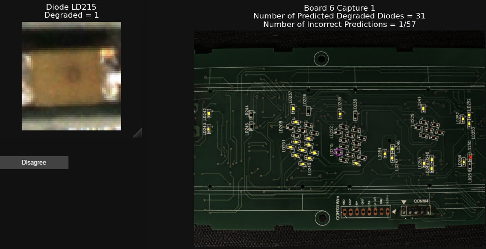

For my master's program at RIT, I have decided to pursue a thesis (rather than a smaller capstone). With this in mind, I was looking for meaningful and innovative work to focus my thesis on. This opportunity presented itself at GIS, where our industry partner, CoreCentric, was looking for automated solutions to many of their factory processes.
After pursuing part number identification originally, and finding that commercial solutions were able to accomplish this task already, I decided to move on to the harder task. I have already spent quite a bit of time designing and implementing a complete solution for assessing condition of LEDs on printed circuit boards. My new thesis direction will focus on various forms of damage assessment, including condition of LEDs, burns and cracks on boards, as well as damaged or missing components.
As stated, my current work on this project has focused on LEDs. Originally, diodes were localized using U-Net. This was broadly successful, but required training on each new board, missed diodes occasionally, and misaligned bounding boxes frequently. Currently, a simple keypoint homography is used localize the diodes – this requires only one marked board per board type and is entirely consistent. New work for localization is focused on determining if YOLO can be used to localize diodes and generalize to new boards.
For damage assessment, a custom CNN was implemented and trained on each LED type separately. For the shown board, the model is able to assess diode health with a greater than 95% accuracy on unseen diodes.